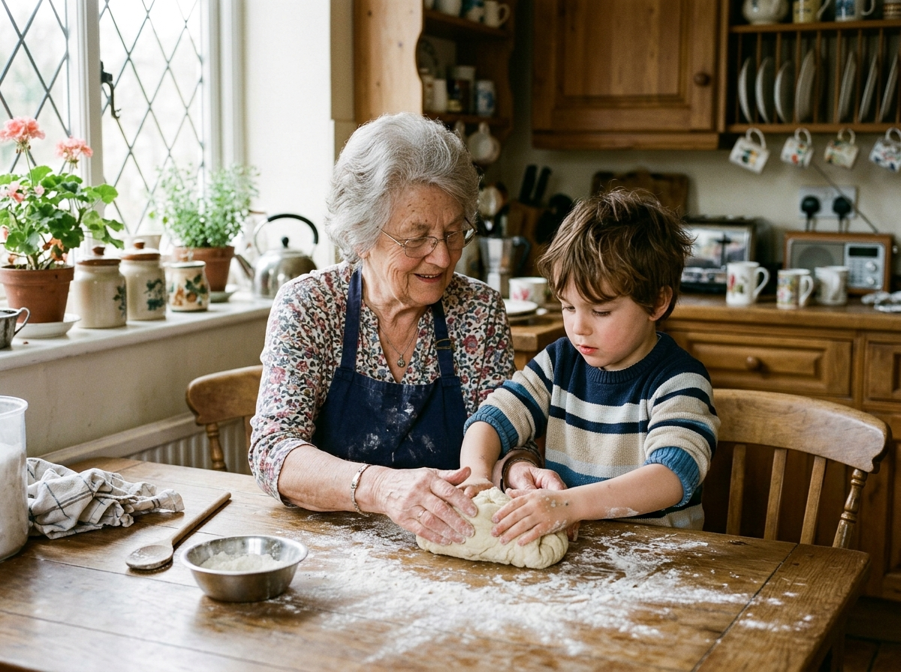
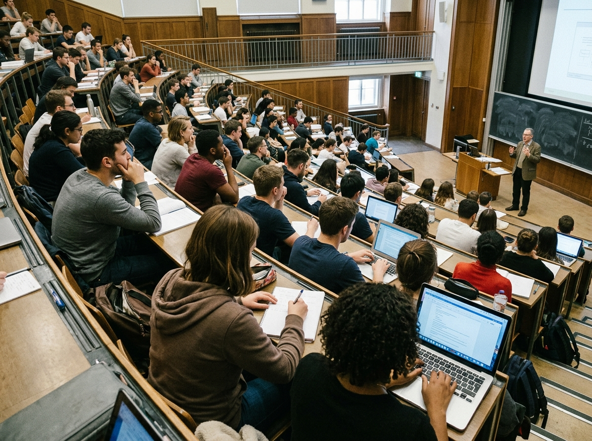
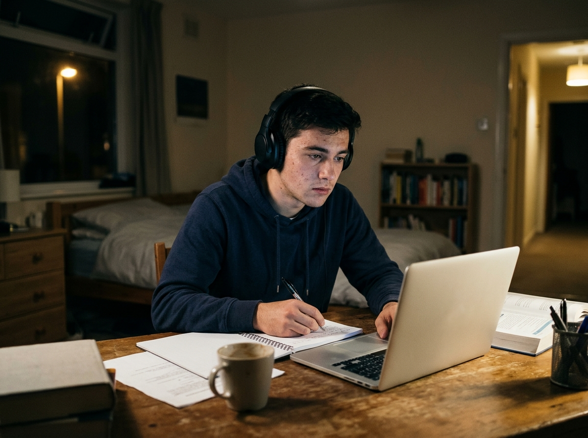
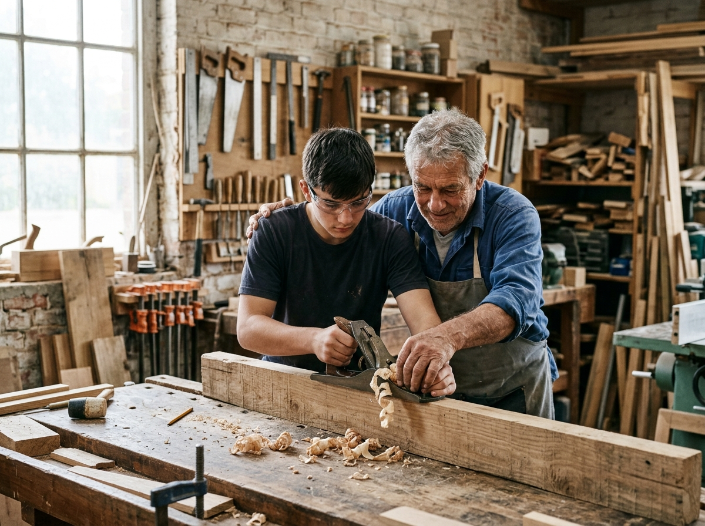
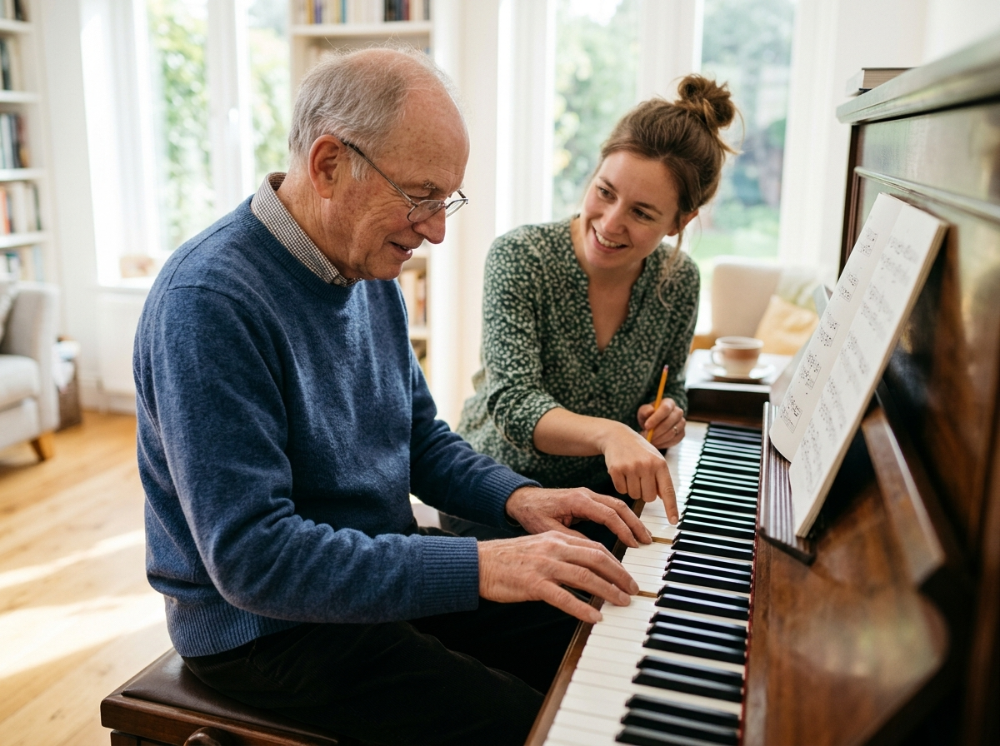

GarethEnglishC2 Proficiency Speaking • Part-by-Part Walkthrough & Practice
Timer:00:00
🎓 Cambridge C2 Proficiency • Paper 4: Speaking
Gaia • Cambridge C2 Proficiency (CPE)
The Speaking Test, Part by Part
You take the test with one other candidate (occasionally two). There are two examiners: the interlocutor, who asks the questions, and the assessor, who listens and marks. It lasts 16 minutes in total.
Part
Time
What happens
What it tests
Part 1 · Interview
2 mins
The interlocutor asks each of you a few questions about yourself.
Natural social English; extending your answers.
Part 2 · Collaborative Task
4 mins
You and your partner discuss a set of pictures: 1 minute on one or two pictures, then 3 minutes on a decision-making task.
Speculating, evaluating, negotiating and reaching a decision together.
Part 3 · Long Turn & Discussion
10 mins
Each of you speaks alone for 2 minutes from a question card, your partner responds, then all three of you discuss the wider theme.
Organising an extended argument; developing abstract ideas.
📋 How you are marked
The assessor gives marks for Grammatical Resource, Lexical Resource, Discourse Management, Pronunciation and Interactive Communication. The interlocutor gives one Global Achievement mark.
🧭 The mindset that wins marks
This isn't a quiz with right answers. It's a conversation between intelligent adults. The examiners want to hear you think out loud, link your ideas and respond to the people in the room.
🗣️ Part 1 • Interview (2 minutes)
Part 1: First Impressions in Two Minutes
The interlocutor will ask where you are from and what you do, then one or two more personal questions. Each answer should take around 20–30 seconds: long enough to show your range, short enough to sound natural.
✓ Answer, then extend
Give a direct answer, then add one reason and one concrete detail. Two or three sentences are plenty.
✗ No rehearsed speeches
Examiners spot memorised answers immediately. A natural, slightly imperfect answer beats a polished monologue.
🔁 Don't echo the question
If asked "What do you enjoy about…?", avoid "What I enjoy about… is…" every time. Vary your opening.
Part 1 BlueprintDirect Answer + What I (value / find…) most is + [reason] + For instance, [specific detail]
Live Drill · Upgrade a Flat Answer
"How do you like to spend your free time?" → "I like reading and going out with friends."
Rebuild this answer using the blueprint above.
"Most of it goes on reading, if I'm honest. What I value most is being able to switch off completely from studying. At the moment, for instance, I'm halfway through a collection of short stories that I can dip in and out of between revision sessions."
🗣️ Part 1 • Practice Round
Part 1 Practice: Typical Interview Questions
Press 30s on the timer for each question. Aim for an answer, a reason and a detail, then stop naturally.
Set A · You and your life
What do you enjoy most about the place where you live?
How important is it for you to plan ahead?
Do you think you'll be living in the same place in ten years' time?
What is the best piece of advice you have ever been given?
Set B · Interests and learning
If you could learn a completely new skill, what would it be?
What part of learning English has been most rewarding for you?
Do you prefer spending time with a large group of people or just a few close friends?
How has the way you spend your free time changed over the years?
Grammar TargetI used to + infinitive …, whereas these days I tend to + infinitive …
Live Drill · Set B, Question 4
"How has the way you spend your free time changed over the years?"
Use the contrast frame above, then add why the change happened.
"Quite dramatically, actually. I used to fill every spare minute with sport and clubs, whereas these days I tend to guard my free time much more carefully. With exams coming up, a quiet walk or an evening with a book feels far more valuable than a packed schedule."
🤝 Part 2 • Collaborative Task (4 minutes)
Part 2: How the Collaborative Task Works
You and your partner are given a set of pictures. You talk to each other, not to the examiner.
Phase 1 · About 1 minute
The interlocutor asks you to look at one or two of the pictures and talk together about them, often what the people might be feeling or why the scene matters.
Speculate; don't just describe.
React to your partner's first comment.
Phase 2 · About 3 minutes
You look at all the pictures and discuss a question, then reach a decision together.
Explore several pictures before deciding.
Save the decision for the last 30–40 seconds.
You don't have to agree. Agreeing to disagree is fine.
Speculating About the PastSubject + could / might / must + have + past participle (+ -ing)
Live Drill · From Description to Speculation
"In this picture there is a woman. She is tired. She is sitting at a desk."
Turn this into C2 speculation using the formula above.
"She looks as though she's reached the end of a very long day. She must have been working on something demanding for hours, and judging by the pile of papers, she might well be facing a deadline."
🤝 Part 2 • Practice Task: Ways of Learning
Part 2 Practice: Learning From Others
A

B

C

D

E
F

Phase 1 · 1 minute · Pictures A and B
"Look at pictures A and B. Talk together about how the people might be feeling and what the relationship between teacher and learner is like in each situation."
Phase 2 · 3 minutes · All pictures
"These pictures will be used in a magazine article about different ways of learning. Talk together about what each situation shows about the value of learning from other people. Then decide which picture best represents the idea of lifelong learning."
🤝 Part 2 • Interactive Communication
Part 2 Strategy: Steering the Conversation Together
Interactive Communication is a separate mark. You earn it by inviting, building on and challenging your partner's ideas, not by delivering two parallel monologues.
Inviting & building
"Where do you stand on this one?" "That's a fair point, and to take it a step further…" "Picking up on what you said about…"
Disagreeing diplomatically
"I take your point, but wouldn't you say that…?" "I see it slightly differently." "That's true up to a point, although…"
Moving towards a decision
"So, shall we try to narrow it down?" "If we had to choose just one…" "It seems we've ended up agreeing on…"
Diplomatic ChallengeI take your point (about X), but wouldn't you say that + [counter-argument]?
Live Drill · Respond to Your Partner
Your partner says: "I think picture C is the best example. You can learn absolutely anything online now."
Challenge this politely using the formula, then invite them back in.
"I take your point about how accessible online learning is, but wouldn't you say that something is lost when there's no one there to correct you? Picture D, for example, shows a kind of hands-on guidance a video can't really replicate. What do you think?"
🎤 Part 3 • Long Turn & Discussion (10 minutes)
Part 3: How the Long Turn Works
You receive a card with a question and three ideas. There is no formal preparation time: read the card and begin. The ideas are optional; your own ideas are equally welcome.
📐 The sequence
Candidate A speaks alone for 2 minutes.
The interlocutor asks Candidate B a related question (about 1 minute).
A follow-up question to both of you.
Then Candidate B receives a new card, and the same pattern repeats.
Finally, a discussion with both of you on the wider theme (about 4 minutes).
🧱 Shaping your 2 minutes
Frame (≈15s):"When considering the question of…, one has to distinguish between…" Two or three points (≈80s):"Turning first to…" / "Closely bound up with this is…" / "Looked at from another angle…" Land it (≈20s):"Ultimately, what this comes down to is…"
If you finish early, deepen a point with an example. Keep going until you're stopped.
Listening Matters TooWhile your partner speaks, listen closely. Your question afterwards will be about their topic, and referring to what they said earns interaction credit.
🎤 Part 3 • Practice Card A
Long Turn Practice: Card A
Prompt Card A · Speak for 2 minutes
How much are our choices shaped by the people around us?
family
friends
social media
Partner question (1 minute)
"Do you think people are more or less independent in their thinking than they used to be?"
Follow-up for both
"Is it possible to make a decision that is entirely your own?"
C2 Contrastive It-CleftIt is not so much X as Y that + [verb]
Live Drill · Model Opening (First 20 Seconds)
Open Card A with a frame and an It-cleft.
"When considering how far other people shape our choices, one has to distinguish between the big decisions in life and the small, everyday ones. It is not so much direct advice as the quiet example of those closest to us that tends to have the greatest influence. Turning first to family…"
🎤 Part 3 • Practice Card B & Final Discussion
Long Turn Practice: Card B, Then the Discussion
Prompt Card B · Speak for 2 minutes
To what extent do the media influence what we believe?
news reporting
advertising
public figures
💬 Discussion questions (4 minutes)
Should there be stricter rules on what influencers can promote?
Why are some people more easily persuaded than others?
Is it the responsibility of schools to teach young people to question what they read?
Use A.R.E.A.: Assertion → Reason → Evidence → Alternative.
Emphatic InversionRarely / Seldom / Only when … + auxiliary + subject + verb
Live Drill · Discussion Question 3
"Is it the responsibility of schools to teach young people to question what they read?"
Answer with A.R.E.A. and include one inversion.
"Absolutely, I'd say it's one of their most important jobs now. Rarely do teenagers come across information that hasn't been filtered by an algorithm, so they need the tools to spot bias. A simple exercise comparing how two newspapers report the same story can be eye-opening. That said, schools can't do it alone; it has to be reinforced at home as well."
🏁 Exam Day • Final Checklist
Walking In With Composure
Part 1
Answer + reason + detail
20–30 seconds, then stop
Sound like yourself, not a script
Part 2
Speculate; don't just describe
Talk to your partner, not the examiner
Explore first; decide at the end
Part 3
Frame → signposted points → land it
Use your own ideas freely
Listen closely to your partner
🛟 If something goes wrong
"Sorry, would you mind repeating the question?": no penalty at all. "Let me put that another way…": self-correction shows control. "That's not something I've given much thought to, but…": buys you time naturally.
⚖️ Restraint over showing off
Three or four well-placed structures (one cleft, one inversion, one passive report) will do the work. Clarity, cadence and genuine engagement with the question matter far more than packing every sentence.
Final Drill · Passive Reporting (It + passive + that)
Rephrase: "Lots of people think that social media makes us less patient."
"It is widely believed that social media has made us less patient." / "Social media is widely believed to have made us less patient."